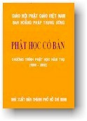

BuddhaSasana
Home Page
This document is written in Vietnamese, with Unicode Times
font
 |
Ban Hoằng pháp Trung ương, GHPGVNPhật
Học Cơ Bản Chương trình Phật
học Hàm thụ (1998-2002) |
[0.1] Lời nói đầu
[0.2] Thành phần Ban Tổ chức, Ban Giảng huấn, Ban Biên soạnPhần I - Lịch sử Phật giáoViệt Nam
[1.1] Tổng quan về lịch sử Phật giáo Việt Nam. Thích Tâm Hải
[1.2] Phật Giáo Thời Kỳ Từ Nhà Nước Ðộc Lập Vạn Xuân Ra Ðời Ðến Vua Trần Nhân Tông. Thích Tâm Hải
[1.3] Phật Giáo Từ Thời Trần Nhân Tông Ðến Cận Ðại. Thích Tâm HảiPhần II - Tư tưởng Phật giáo
[2.1] Các cấp độ giới pháp. Thích Phước Sơn
[2.2] Giới thiệu về đường lối tu thiền của Phật giáo. Thích Thanh Từ
[2.3] Giới thiệu học thuyết Phân kỳ và hệ thống Phán giáo. Khải Thiên
[2.4] Giới thiệu về Tịnh độ tông. Thích Viên Giác
[2.5] Giới thiệu về Mật tông (Kim cương thừa). Thích Viên Giác
[2.6] Giới thiệu về Pháp Hoa tông. Thích Trí Quảng
[2.7] Giới thiệu về Hoa Nghiêm tông. Thích Trí QuảngBài đọc thêm
[2.a] Giới luật là công truyền hay bí truyền? Thích Phước Sơn
[2.b] Tính chất giáo dục của giới luật Phật giáo. Thích Phước Sơn
[2.c] Chuỗi hạt huyền trong kinh tạng Pàli. Thích Chơn Thiện
[2.d] Giới thiệu về Kim cương thừa. Nguyễn Thế Ðăng
[2.e] Cơ sở triết lý của Tam luận tông. Khải Thiên
[2.f] Duyên khởi và tính Không được đồ giải qua phương trình E = MC2 . Khải Thiên & Nguyễn Chung Tú-oOo-
Ðược sự chỉ đạo của Hòa thượng Trưởng ban Hoằng pháp Trung ương GHPGVN, Ban Biên tập Chương trình Phật học hàm thụ (PHHT) đã tiến hành biên soạn bộ sách "Phật học cơ bản" nhằm đáp ứng nhu cầu học tập của học viên đang theo học chương trình PHHT, cũng như của đông đảo Tăng Ni và Phật tử.
Bộ sách "Phật học cơ bản" này gồm 4 tập, được biên soạn bởi nhiều tác giả và trình bày theo thứ tự từ các vấn đề Phật học căn bản cho đến các chủ đề giáo lý chuyên sâu, nhằm giúp người học có một số kiến thức cơ bản về Phật giáo.
Trong tập Ba này, chúng tôi in lại các bài giảng chính khóa của chương trình PHHT năm thứ ba (2000-2001) đã được đăng trên nguyệt san Giác Ngộ và một số bài đọc thêm, thành một tuyển tập. Hy vọng tuyển tập này sẽ giúp ích quý độc giả trong việc tìm hiểu và nghiên cứu về những vấn đề Phật học cơ bản.
Ban Biên Soạn
Chương trình Phật học Hàm thụ-oOo-
Thành phần Ban Tổ chức, Ban Giảng huấn và Ban Biên soạn
của "Chương trình Phật học Hàm thụ (1998 - 2002)"Ban Tổ chức
* Trưởng ban: HT Thích Trí Quảng, Trưởng ban Hoằng pháp T.U GHPGVN kiêm Tổng Biên tập Báo Giác Ngộ
* Phó ban: TT Thích Giác Toàn, Phó ban Giáo dục T.U GHPGVN kiêm Phó Tổng Biên tập báo Giác Ngộ
* Phó ban: TT Thích Thiện Tâm, Phó ban Hoằng pháp T.U GHPGVN
* Thư ký kiêm biên tập Chương trình: ÐÐ Thích Tâm Thiện, Ủy viên Ban Văn hóa T.U GHPGVN
* Phó Thư ký: ÐÐ Thích Tâm Khanh, Ủy viên Ban Phật giáo Quốc tế T.U GHPGVN, Biên tập viên Báo Giác Ngộ
* Phó Thư ký: ÐÐ Thích Tâm Hải, Biên tập viên Báo Giác Ngộ
* Kiểm tra: CS Tống Hồ Cầm, Phó Viện trưởng Học viện PGVN tại TP HCM kiêm Phó Tổng Biên tập Báo Giác Ngộ
Ban Giảng huấn
HT Tiến sĩ Thích Thiện Châu (Paris), HT Tiến sĩ Thích Trí Quảng, TT Tiến sĩ Thích Chơn Thiện và chư tôn Thượng tọa, Ðại đức, Giáo sư trực thuộc ngành Hoằng pháp GHPGVN.
Ban Biên soạn
TT Thích Giác Toàn, TT Thích Thiện Tâm, TT Thích Thiện Bảo, GS Minh Chi, ÐÐ Thích Tâm Thiện, ÐÐ Thích Viên Giác, ÐÐ Thích Tố Huân, ÐÐ Thích Gia Tuệ, ÐÐ Thích Trí Chơn, ÐÐ Thích Tâm Khanh, ÐÐ Thích Tâm Hải, ÐÐ Thích Từ Hòa, ÐÐ Thích Phước Lượng.
-oOo-
Tập Một | Tập Hai | Tập Bốn | Toàn bộ
Source: Nguyệt san Giác Ngộ, Sài Gòn, 1999-2000
Revised: 25-11-2001